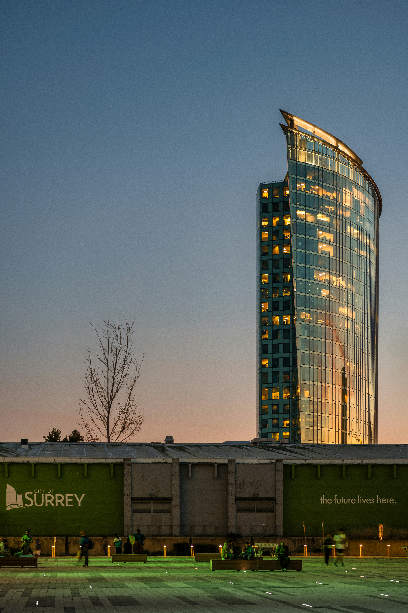

Green spaces
See parks, trails, gardens and open spaces across the city.
See parksWelcome to Surrey, BC
A growing city in Metro Vancouver with quiet parks, busy neighbourhoods and coasts which are never too far away. Discover the best of Surrey, BC with our comprehensive guide.
Explore
ADD AN ORIGINAL PHOTO OF SURREY HERE
Save it asimages/surrey-original.jpgWelcome to Surrey, BC
From quiet parks to bustling neighbourhoods, Surrey offers a unique blend of urban and natural experiences.
See parks, trails, gardens and open spaces across the city.
See parksEach townn centre hs its own pace and character.
Take a glanceSurrey sits between Vancouver and Fraser Valley.